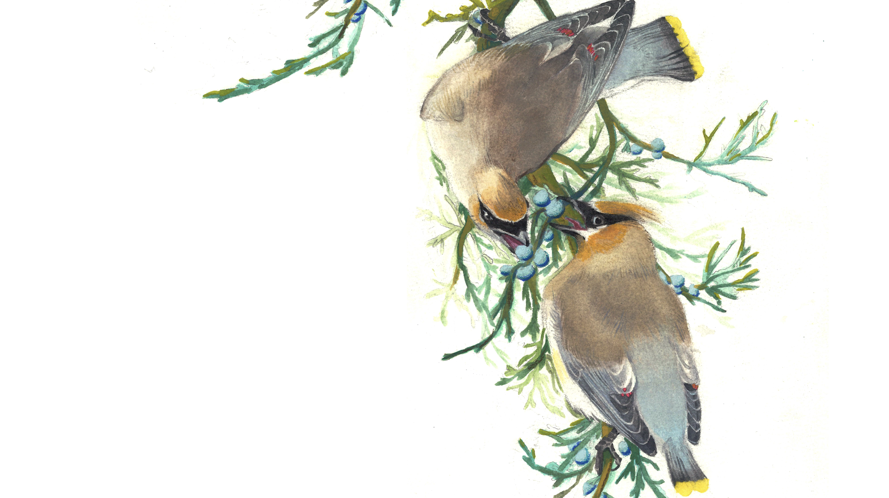

Scientific Illustration · 2024

在这里写项目介绍。描述这个项目的背景、目的和你的工作方式。 可以分多段写，每段用 <p class="project-body"> 包起来。
This project explores the intersection of scientific accuracy and visual storytelling. Each illustration was developed through extensive field observation and cross-referenced with specimen collections.
描述你的创作过程。比如：从野外观察到草稿，再到最终水彩稿的流程。
Initial field sketches
Final watercolour
"Scientific illustration bridges the gap between data and understanding — making the invisible visible."
Plumage detail
Habitat context
Anatomical notes